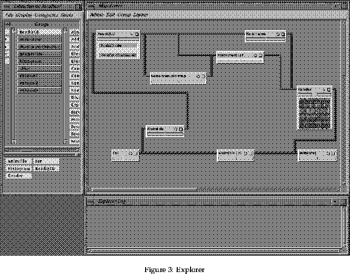

Next: 6.1 The Librarian Up: Manual to aid the Previous: 5.5 Where to go
To use Explorer you must be at an SGI terminal. Start up explorer by typing:
explorer &
at the prompt. If using the .explorerrc file provided (see section 6.4) the user will also need to type:
export EXPLORER_VERSION=V2
The user will be presented with a startup window, and then three other windows:
